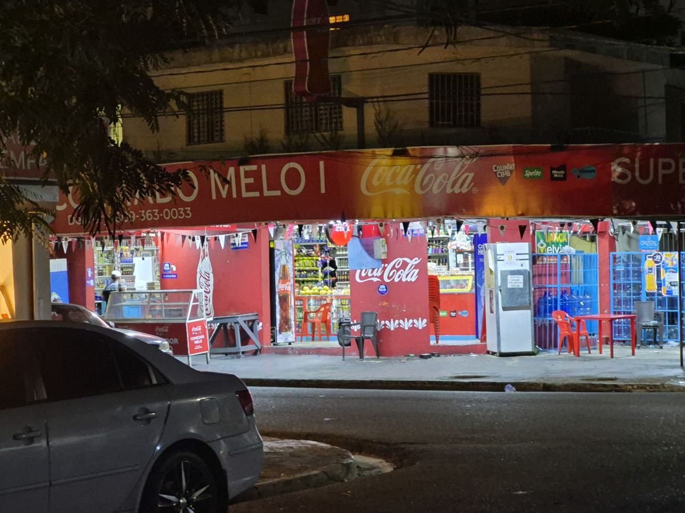
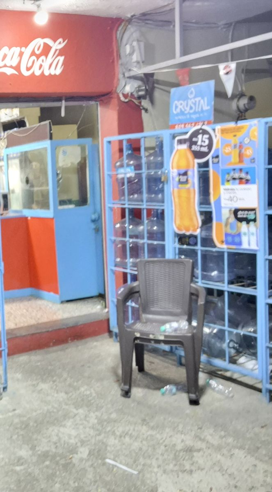

Funciona sin internet
Después de tu primera visita, la página queda guardada en tu teléfono. Si se cae la señal, igual puedes ver el horario y el catálogo.
> buscando "Colmado Melo 1"... 0 resultados
> redes_sociales.db ... BORRADO
> pagina_web/index.html ... NO EXISTE
Pueden borrar una página web, pero no 17 horas diarias de servicio al barrio. Colmado Melo 1 regresa más rápido, más seguro y más cerca de ti que nunca.

Esto fue lo único que encontramos en la oficina la mañana después del borrado. Un USB sin marca, encima del mostrador, al lado de la caja de los chicles.
> LEEME.txt
"Tu negocio ha sido borrado de la existencia digital.
Si quieres recuperarlo, deberás reinventarlo.
Usa la tecnología, la creatividad y tu ingenio para traerlo de vuelta."
Así pasamos de no existir en internet a volver con más fuerza. Cada paso está documentado en el expediente del incidente.
Cerramos como siempre a las 11:00 p.m. Cuarenta y siete minutos después, la página, el perfil de Instagram y la ficha del mapa dejaron de responder al mismo tiempo.
Los clientes del desayuno no nos encontraban en Google y pensaron que el colmado había cerrado. El teléfono no paró de sonar.
David, el encargado, encontró el USB con el mensaje. Nadie sabe quién lo dejó. Las cámaras solo grabaron estática.
Decidimos no copiar lo que teníamos, sino construir algo mejor: un catálogo con cotización en línea, un asistente que responde a cualquier hora y un sitio que funciona aunque se caiga la conexión.
Estás leyendo la prueba. Colmado Melo 1 volvió a existir en internet, y esta vez con escudo.
Cada función nueva responde a algo que nos pasó durante el borrado.
Después de tu primera visita, la página queda guardada en tu teléfono. Si se cae la señal, igual puedes ver el horario y el catálogo.
¿Te escribió alguien diciendo ser el colmado? Compruébalo en segundos con nuestro verificador oficial.
Nuestro asistente virtual responde horarios, precios, ubicación y delivery, incluso cuando el colmado está cerrado.
Arma tu compra en el catálogo, ve el total al momento y envíala por WhatsApp con un toque.
Calle Biblioteca Nacional esquina Centro Olímpico, sector El Millón. Si nos ves, ya nos encontraste.

Gracias. Nos obligaste a hacer lo que llevábamos años posponiendo. Ahora el barrio nos encuentra más fácil, nos escribe más rápido y nos conoce mejor. Bórranos otra vez si puedes.